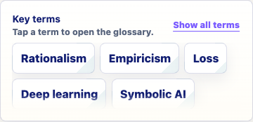
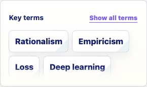
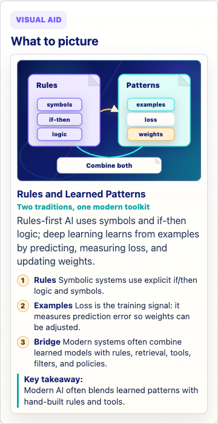
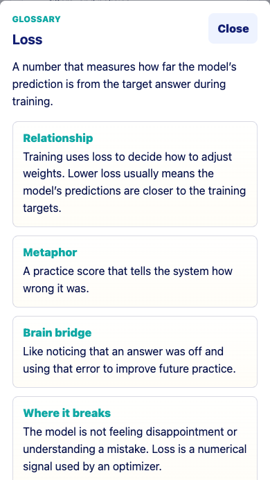
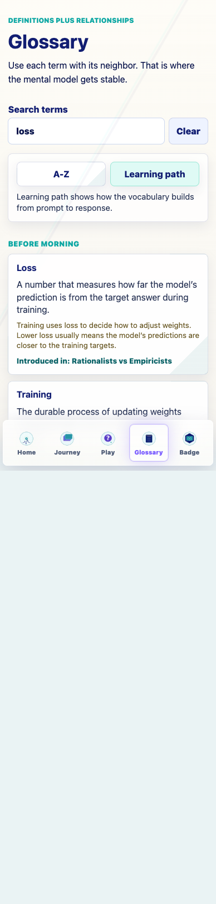

Prompt Life content repair
Date: 2026-06-06
Scope: small content/glossary pass. No new cards, Journey order changes, progress changes, checkpoint randomization changes, generated images, or dependencies.
Result: Loss now appears on Rationalists vs Empiricists, the glossary drawer explains it clearly, and the Rules and Learned Patterns visual explains loss in context.
npm run typecheck, npm run build, and npm run audit:answers passed. Build retained the existing Vite large-chunk warning.

390px: Loss is visible in the collapsed key-term chips.

320px: Loss remains visible and no chip overflow was detected.

Visual copy: the Examples callout explains loss as the training signal that measures prediction error so weights can be adjusted.

Drawer: Loss now has a clearer definition, relationship, metaphor, Brain Bridge, limit, and confusion warning.

Learning path: Loss is introduced at Rationalists vs Empiricists.